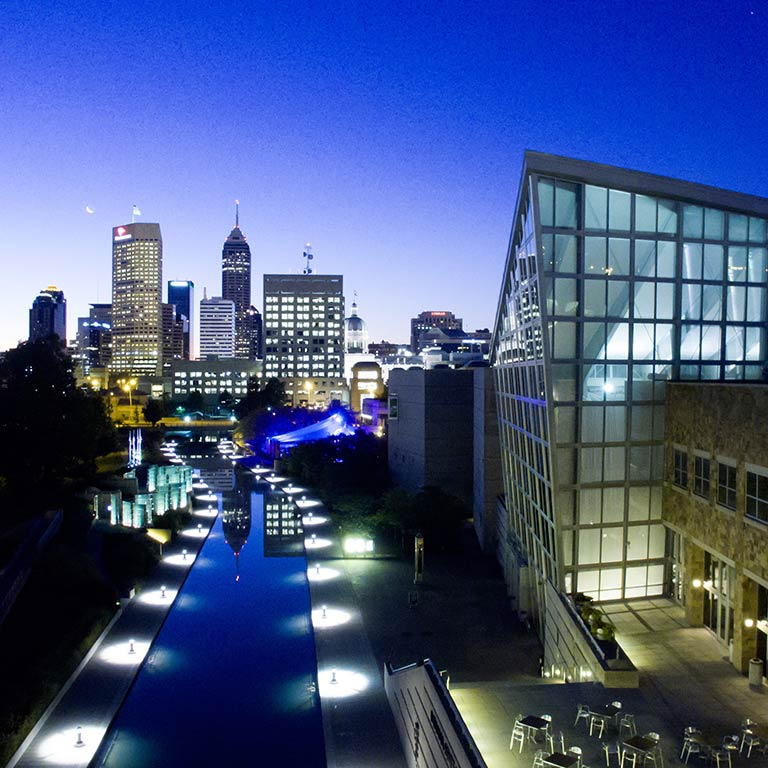
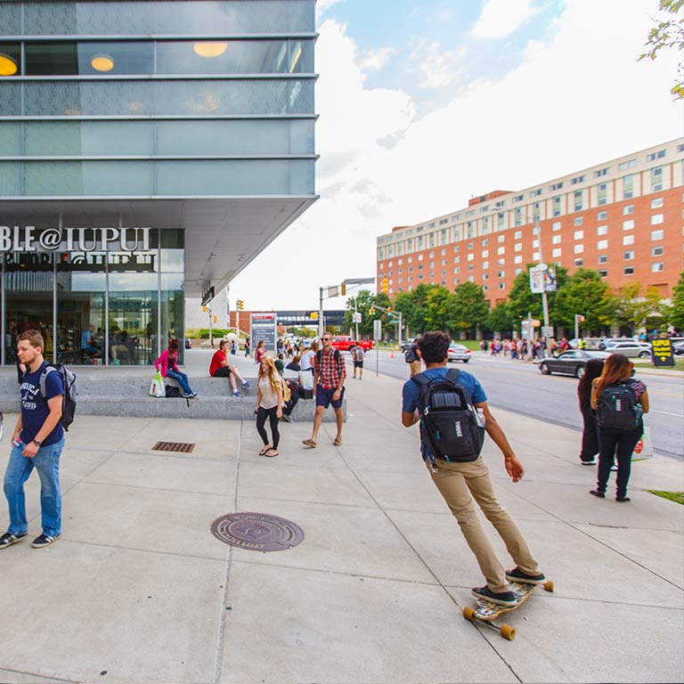

IUPUI
Herron School of Art + Design
Inspire, and Be Inspired
At Herron, your education isn't defined by what you can make or do, but how your ideas influence others.
Herron's home in the heart of Indianapolis is a significant piece of the student experience. Your work will support diverse communities, solve business and industry challenges, and improve lives across Central Indiana and beyond.
Learn More at the Division of Student AffairsProfessional Experience
Collaborate with businesses and nonprofits. Show your work at galleries and events. Teach art in schools and museums. Practice art and therpay in the state's top facilities.
Not Your Typical College Town

Explore the City
Indianapolis
If you stand in the heart of Indianapolis, on Monoument Circle, you will find art and culture in every direction. There are three major art museums in downtown, as well as dozens of galleries, theaters, music venues, libraries, cinemas, and festivals.
Explore the City

Explore Campus
IUPUI
The IUPUI campus is home to approximately 100 research centers, over 550 programs from Indiana University and Purdue Univerisity, and a large, diverse student body that is known for its involvement in community service and engagement.
Explore Campus